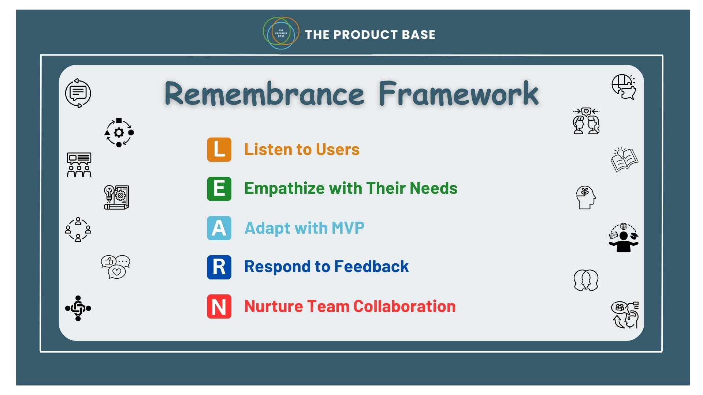

Before we dive in, let me ask you a question.
Think about a product you absolutely love using in your day-to-day life. It could be an app on your phone, a handy kitchen tool, or even your favorite comfy sweater. What is it about this thing that makes you adore it? How does it simplify your life? Do you ever feel like it was tailor-made just for you?
If your answer is yes, It's because those companies nailed user-centric product development. Let's break it down for you!
User-centric product development is all about making products that fit users like a glove. Instead of simply guessing at their wants, companies go above and beyond to truly understand their target audience. This involves actively engaging with users through surveys, focus groups, and feedback sessions, as well as observing their product usage. Essentially, it's like having a direct line to the core of their needs and preferences.
But it goes beyond just listening to users, it's about understanding what customers really want. Picture yourself in your user's shoes. What challenges are they facing? What are their goals and aspirations? By empathizing with your users, you can gain a deeper understanding of their needs and design products that truly resonate with them on an emotional level.
Now, again, there’s no perfect product from the get-go. User-centric product development is all about learning and improving. Instead of trying to get everything right from the start, companies launch a basic version of their product called a minimum viable product (MVP). Then, they gather feedback from users and use it to make the product better and better over time. It's like a continuous upgrade that keeps users happy and coming back for more.
As the famous saying goes, “Teamwork makes the dream work.” It's not just up to one person or team to make sure the product hits the mark. It's important to involve stakeholders from across the organization in the process. Whether it's engineers, designers, marketers, or customer support, everyone has a role to play in shaping the user experience. By fostering a culture of collaboration and cross-functional teamwork, you can ensure that everyone is aligned around the common goal of creating a product that truly resonates with users.
So, next time you create a product, remember to keep your users at the center of it all. By understanding what they need, empathizing with their struggles, and working together as a team, you can create products that people will love and come back to. And that's what it's all about, right? Happy creating!